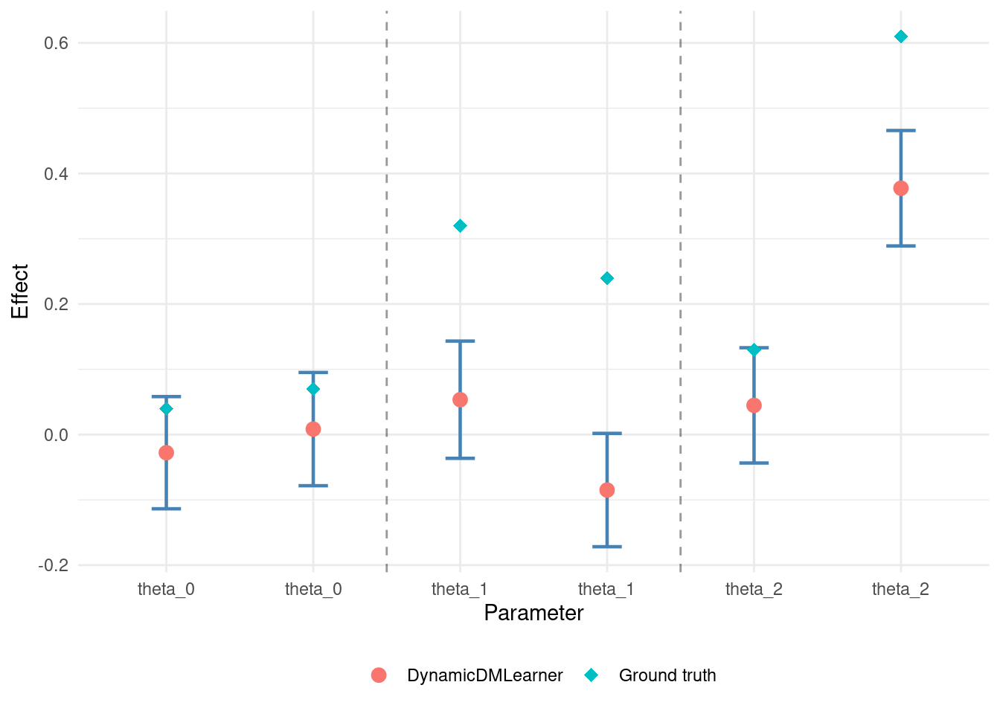
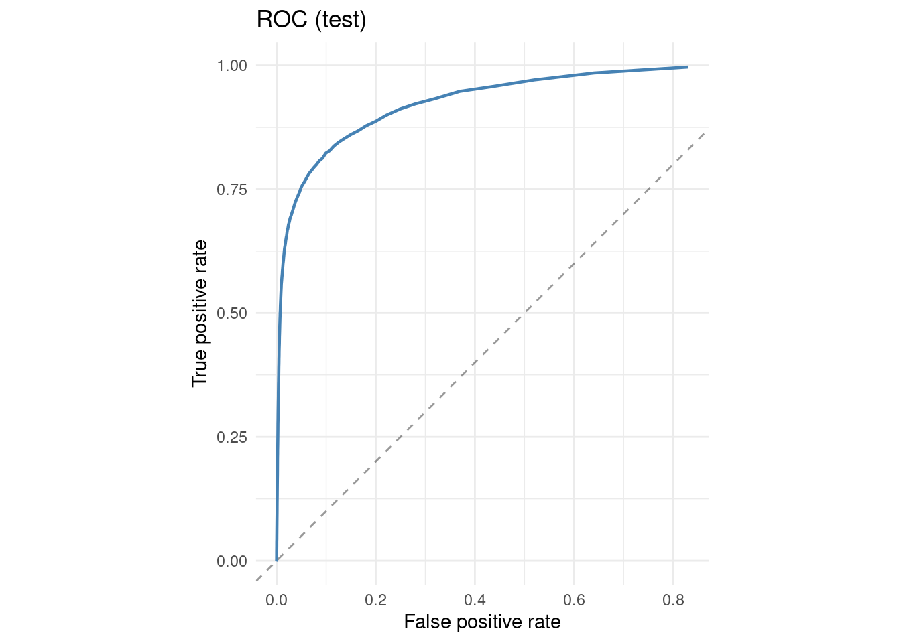
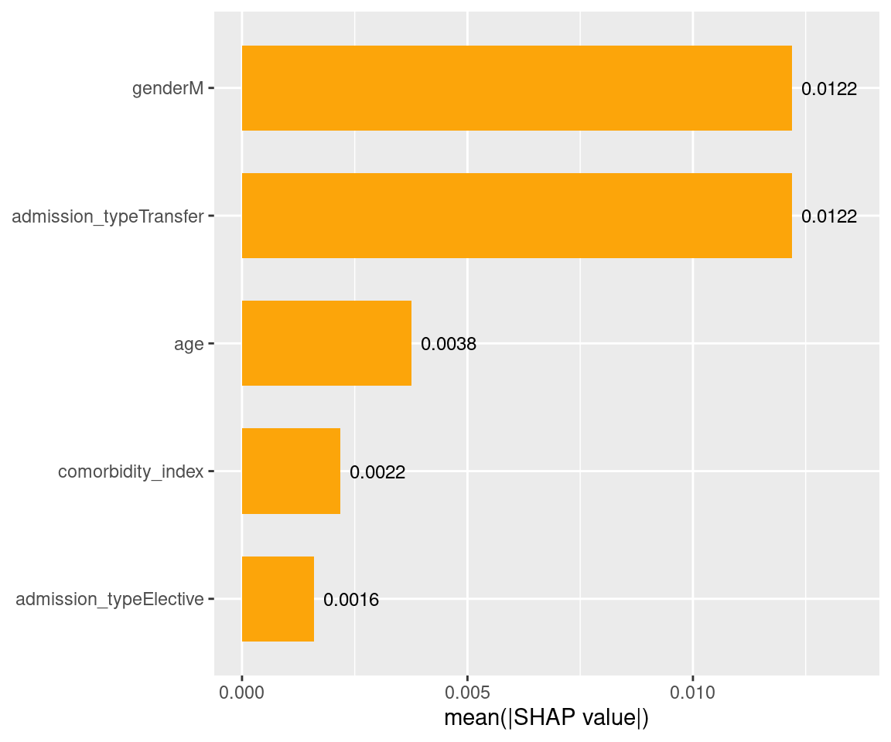
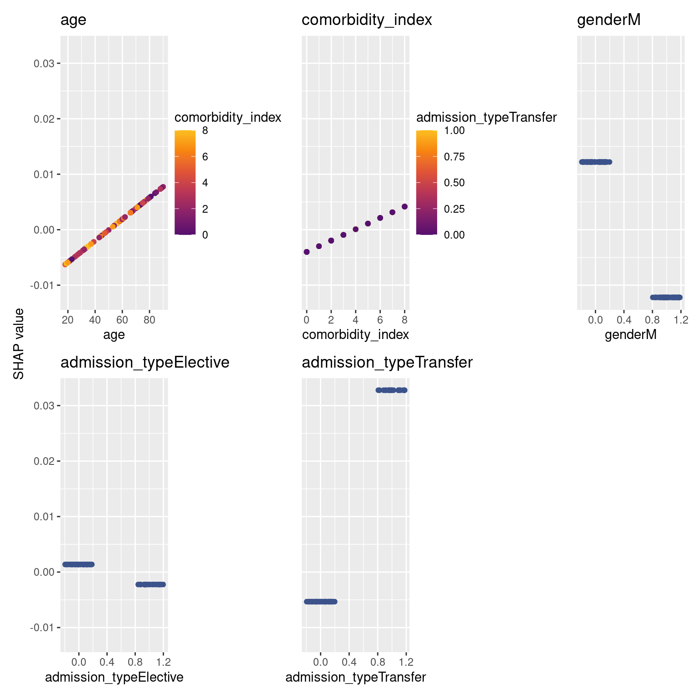

Code
packages <- c(
"RCausalML",
"ggplot2"
)
Dynamic Double Machine Learning (Dynamic DML) is a causal inference method designed to estimate heterogeneous treatment effects (also called conditional average treatment effects, or CATE) in dynamic, sequential settings where treatments are assigned over multiple time periods according to an adaptive policy.
It is implemented in the EconML library (in econml.panel.dml.DynamicDML) and extends the classic Double Machine Learning (DML) framework to handle panel data or time-series data with repeated interventions (e.g., A/B tests, policy rollouts, or observational studies with time-varying treatments).
Standard DML works great for static (one-time) treatments with high-dimensional or complex confounders. However, many real-world scenarios involve dynamic treatments: - Treatments in period \(t\) depend on past treatments and evolving states.
Outcomes accumulate over time.
Confounders (variables that affect both treatment decisions and outcomes) are high-dimensional or have unknown functional forms.
Dynamic DML solves this by using machine learning to flexibly model the “nuisance” relationships (confounding and dynamics) while delivering robust, semi-parametric estimates of how treatments in different periods affect the final outcome — with heterogeneity driven by initial conditions.
It assumes the data follow a Markov decision process-like structure with observed dynamic confounders. Here’s the core logic:
Data Structure
You provide panel data indexed by unit (e.g., individual, firm) and time \(t = 1, \ldots, m\):
\[ \{X_t, W_t, T_t, Y_t\}_{t=1}^m \]
groups array tells the model which rows belong to the same unit across time.Underlying Structural Model
The method is built on these equations (the data-generating process):
\[ XW_t = A \cdot T_{t-1} + B \cdot XW_{t-1} + \eta_t \] (state/confounder evolution)
\[ T_t = p(T_{t-1}, XW_t, \zeta_t) \] (treatment policy — how treatments are chosen adaptively)
\[ Y_t = \theta_0(X_0)' T_t + \mu' XW_t + \epsilon_t \] (outcome equation)
Estimation via Double Machine Learning (the “Double” part)
Dynamic DML uses the classic DML trick to get unbiased estimates even when nuisance functions are estimated with ML (which can overfit):
Step A: Nuisance estimation
Use flexible ML models to estimate the two “nuisance” functions:
Step B: Residualization & orthogonalization
Create residuals that “partial out” the confounding. Because of the dynamic structure, this is done recursively across time periods while respecting the panel structure.
Step C: Cross-fitting
Data are split into folds. Nuisance models are trained on one fold and used to predict residuals on the held-out fold (prevents overfitting and ensures valid inference).
Step D: Solve the moment condition
The final estimator solves a score equation that isolates \(\theta_0(X_0)\), yielding consistent and asymptotically normal estimates even if the ML nuisance models are slightly misspecified (as long as they converge fast enough).
The result is an estimate of \(\theta_0(X_0)\) for any new \(X_0\), telling you how much the sequence of treatments would change the final outcome for units with different initial characteristics.
model_t: ML model for the treatment (nuisance).model_y: ML model for the outcome (nuisance).X: Initial or time-varying state features.W: Additional high-dimensional controls.groups: Panel identifier.| Aspect | Standard DML | Dynamic DML |
|---|---|---|
| Treatment | One-time (static) | Sequential & adaptive over time |
| Data | Cross-sectional or simple panel | Full panel with time dynamics |
| Confounding | Static controls | Dynamic (time-varying) confounders |
| Effect estimated | CATE at a point in time | Cumulative effect on final outcome |
| Heterogeneity | Function of any covariates | Driven by initial state \(X_0\) |
It is computationally heavier than static DML because it processes the full panel structure and dynamic nuisance models.
In short, Dynamic DML lets you answer questions like:
“If two units start with different initial characteristics, how much better (or worse) will the final outcome be if we follow this dynamic treatment policy versus that one — after properly controlling for all the evolving confounders using machine learning?”
The preferred data format is balanced panel data: each panel is one entity (e.g. company, store, or person) and rows are time points. Example:
| Company | Year | Features | Investment | Revenue |
|---|---|---|---|---|
| A | 2018 | … | $1,000 | $10,000 |
| A | 2019 | … | $2,000 | $12,000 |
| A | 2020 | … | $3,000 | $15,000 |
| B | 2018 | … | $0 | $5,000 |
| … | … | … | … | … |
When passing data to the estimator, the entity column corresponds to the groups argument at fit time. The time index can be inferred from the order of rows within each group.
This notebook demonstrates DynamicDMLearner using RCausalML package on synthetic panel data, mirroring the EconML Dynamic Double ML Examples.
Contents
Part A: Dynamic DML with Synthetic DataPart B: Hospital clinical deterioration (data pipeline, risk model, Dynamic DML, policy curves, SHAP)Following R packages are required to run this notebook. If any of these packages are not installed, you can install them using the code below:
RCausalML, ggplot2
packages <- c(
"RCausalML",
"ggplot2"
)# Install missing packages
# new_packages <- packages[!(packages %in% installed.packages()[, "Package"])]
# if (length(new_packages)) install.packages(new_packages)# Load packages with suppressed messages
invisible(lapply(packages, function(pkg) {
suppressPackageStartupMessages(library(pkg, character.only = TRUE))
}))# Check loaded packages
cat("Successfully loaded packages:\n")Successfully loaded packages:[1] "package:ggplot2" "package:RCausalML" "package:stats"
[4] "package:graphics" "package:grDevices" "package:utils"
[7] "package:datasets" "package:methods" "package:base" set.seed(123)We use a simple panel data generating process: each unit has one row per period; treatments in each period affect the final-period outcome \(Y_T\). With \(T_t\) = treatment(s) at time \(t\), \(X_t\) = features/controls, and a linear CATE:
\[ Y_T = \sum_{t=1}^{T} \theta_t' T_t + \gamma' W + \eta \]
We generate balanced panels with n_panels units and n_periods time periods; each period has n_treatments treatment variables. The outcome is observed at the last period (and repeated per row for compatibility with the fit API).
n_panels <- 800L # number of panels (units)
n_periods <- 3L # time periods per panel
n_treatments <- 2L # treatments per period
n_w <- 20L # control variables
n_x <- 100L # total features (for Section 2)
s_x <- 10L # support size for controlsGenerate panel data with dynamic treatments and a final-period outcome that depends on all treatments and controls. The true effect vector has one coefficient per treatment dimension (period-specific effects).
# One row per (unit, period). Outcome Y is the final-period outcome for that unit.
n <- n_panels * n_periods
groups <- rep(seq_len(n_panels), each = n_periods)
# True effects: (n_periods * n_treatments) coefficients
true_effect <- c(0.04, 0.07, 0.32, 0.24, 0.13, 0.61)
# Controls W (time-varying): same dimension for all rows
W <- matrix(rnorm(n * n_w), n, n_w)
colnames(W) <- paste0("W", seq_len(n_w))
# Treatments T: (n_periods * n_treatments) columns; for row in period p, fill period 1..p, rest 0
T_mat <- matrix(0, n, n_periods * n_treatments)
for (i in seq_len(n_panels)) {
idx <- ((i - 1) * n_periods + 1):(i * n_periods)
for (p in seq_len(n_periods)) {
row <- (i - 1) * n_periods + p
T_mat[row, ((p - 1) * n_treatments + 1):(p * n_treatments)] <- rnorm(n_treatments, 0.5, 0.5)
}
}
colnames(T_mat) <- paste0("T", seq_len(n_periods * n_treatments))
# Outcome at last period: Y = T %*% theta + W %*% gamma + noise (per unit)
gamma_w <- runif(n_w, 0, 0.3)
Y_last <- numeric(n_panels)
for (i in seq_len(n_panels)) {
idx <- ((i - 1) * n_periods + 1):(i * n_periods)
T_i <- T_mat[idx, , drop = FALSE]
# Use period-specific T for this unit (row n_periods has all treatments)
Ti_full <- T_i[n_periods, ]
W_i <- W[idx[n_periods], , drop = FALSE]
Y_last[i] <- sum(true_effect * Ti_full) + as.numeric(W_i %*% gamma_w) + rnorm(1, 0, 0.5)
}
# Repeat last-period outcome for each row of the panel (for fit API)
Y <- rep(Y_last, each = n_periods)We fit DynamicDMLearner with cross-fitting. With no \(X\) we use an intercept-only CATE (one effect per treatment dimension). We set fit_cate_intercept = FALSE when \(X\) is omitted so the design matrix has a single column and the estimated coefficient for each treatment is the period effect.
est <- DynamicDMLearner(
model_y = "ranger", model_t = "ranger", cv = 3L, random_state = 123L,
fit_cate_intercept = FALSE # intercept-only when X = NULL (avoids collinearity)
)
est <- fit(est, Y = Y, T = T_mat, X = NULL, W = W, groups = groups)Average treatment effect: we approximate the “default policy” effect by averaging predicted CATE over the sample (or using a baseline vs target policy).
[1] "Average effect (mean predicted CATE): -0.03"Effect of moving from baseline policy (all zeros) to target policy (all ones). With 6 treatment dimensions, the effect is the sum of the estimated period effects (since T1 - T0 = 1 for each).
baseline_policy <- matrix(0, 1, n_periods * n_treatments)
target_policy <- matrix(1, 1, n_periods * n_treatments)
# Effect = sum(theta * (T1 - T0)); with T1 - T0 = 1 for all, effect = sum(period effects)
intercept_est_full <- vapply(est$model_cate$models, function(fit) as.numeric(stats::coef(fit)[1]), numeric(1))
eff_policy <- sum(intercept_est_full * as.numeric(target_policy - baseline_policy))
print(paste0("Effect of target vs baseline policy (sum of period effects): ", round(eff_policy, 2)))[1] "Effect of target vs baseline policy (sum of period effects): 0.37"Period treatment effects: the R DynamicDMLearner stores one linear model per treatment column. With fit_cate_intercept = FALSE and no \(X\), the single coefficient per model is the marginal effect for that period/treatment.
m <- est$model_cate
if (m$type == "lm_multi") {
intercepts <- vapply(m$models, function(fit) as.numeric(stats::coef(fit)[1]), numeric(1))
} else {
intercepts <- as.numeric(stats::coef(m$model)[1])
}
dim(intercepts) <- c(n_treatments, n_periods)
for (p in seq_len(n_periods)) {
print(paste0("Marginal effect of treatments in period ", p, " on final outcome: ",
paste(round(intercepts[, p], 4), collapse = ", ")))
}[1] "Marginal effect of treatments in period 1 on final outcome: -0.0278, 0.0084"
[1] "Marginal effect of treatments in period 2 on final outcome: 0.0534, -0.085"
[1] "Marginal effect of treatments in period 3 on final outcome: 0.0447, 0.3774"We compare estimated intercepts (period effects) to the true effect vector.
if (est$model_cate$type == "lm_multi") {
conf_ints <- t(vapply(est$model_cate$models, function(fit) {
ci <- stats::confint(fit, parm = 1, level = 0.95)
c(ci[1], ci[2])
}, numeric(2)))
conf_lower <- conf_ints[, 1]
conf_upper <- conf_ints[, 2]
intercept_est <- vapply(est$model_cate$models, function(fit) as.numeric(stats::coef(fit)[1]), numeric(1))
} else {
intercept_est <- as.numeric(stats::coef(est$model_cate$model)[1])
ci <- stats::confint(est$model_cate$model, parm = 1, level = 0.95)
conf_lower <- ci[1]; conf_upper <- ci[2]
}idx_est <- seq_len(length(true_effect))
df_plot <- data.frame(
param = factor(idx_est),
estimate = if (length(intercept_est) == length(true_effect)) intercept_est else rep(intercept_est[1], length(true_effect)),
true = true_effect,
lower = if (length(conf_lower) == length(true_effect)) conf_lower else NA_real_,
upper = if (length(conf_upper) == length(true_effect)) conf_upper else NA_real_
)
# If we have one intercept only, plot it once
if (length(intercept_est) != length(true_effect)) {
df_plot$estimate <- intercept_est[1]
df_plot$lower <- NA
df_plot$upper <- NA
}
ggplot(df_plot, aes(x = param)) +
geom_errorbar(aes(ymin = lower, ymax = upper, y = estimate), width = 0.2, colour = "steelblue", linewidth = 0.8) +
geom_point(aes(y = estimate, colour = "DynamicDMLearner"), size = 3) +
geom_point(aes(y = true, colour = "Ground truth"), size = 3, shape = 18) +
geom_vline(xintercept = seq(2.5, 6, by = 2), linetype = "dashed", alpha = 0.4) +
scale_x_discrete(labels = paste0("theta_", rep(0:(n_periods - 1), each = n_treatments))) +
labs(y = "Effect", x = "Parameter", colour = "") +
theme_minimal() +
theme(legend.position = "bottom")
We can estimate treatment effect heterogeneity with respect to a subset of features \(X\) (e.g. time-invariant unit characteristics). Pass \(X\) at fit time; the CATE is then \(\theta(X) = \phi(X)' \beta + \text{intercept}\).
We add features \(X\) and let the effect depend on them: \(\theta(X) = \theta_0 + \theta_1' X\).
het_strength <- 0.5
n_hetero <- 2L # number of effect modifiers
n_x_use <- 5L # use first 5 X columns for heterogeneityset.seed(12)
X_full <- matrix(rnorm(n * n_x_use), n, n_x_use)
colnames(X_full) <- paste0("X", seq_len(n_x_use))
# Heterogeneous effect: true_effect + X[, 1:n_hetero] %*% het_coef
het_coef <- matrix(het_strength * runif(n_hetero * (n_periods * n_treatments)), n_hetero, n_periods * n_treatments)
true_effect_het <- true_effect # baseline
# For each unit, Y_last = T %*% (true_effect + het_coef' %*% x) + ...
Y_last_het <- numeric(n_panels)
for (i in seq_len(n_panels)) {
idx <- ((i - 1) * n_periods + 1):(i * n_periods)
x_i <- X_full[idx[1], 1:n_hetero, drop = FALSE]
theta_i <- true_effect + as.numeric(x_i %*% het_coef)
Ti_full <- T_mat[idx[n_periods], ]
W_i <- W[idx[n_periods], , drop = FALSE]
Y_last_het[i] <- sum(theta_i * Ti_full) + as.numeric(W_i %*% gamma_w) + rnorm(1, 0, 0.5)
}
Y_het <- rep(Y_last_het, each = n_periods)est_het <- DynamicDMLearner(model_y = "ranger", model_t = "ranger", cv = 3L, random_state = 1L)
est_het <- fit(est_het, Y = Y_het, T = T_mat, X = X_full, W = W, groups = groups)Average treatment effect for a test set of units:
X_test_idx <- seq(1, min(25, n_panels), by = 3)
X_test <- X_full[(X_test_idx[1] - 1) * n_periods + 1, , drop = FALSE]
for (j in seq_along(X_test_idx)[-1]) {
row_j <- (X_test_idx[j] - 1) * n_periods + 1
X_test <- rbind(X_test, X_full[row_j, , drop = FALSE])
}
cate_het <- predict(est_het, newdata = X_test)
print(paste0("Average effect (mean CATE on test set): ", round(mean(cate_het), 2)))[1] "Average effect (mean CATE on test set): -0.17"Effect of target vs baseline policy for each test unit:
eff_het <- vapply(seq_len(nrow(X_test)), function(i) {
effect(est_het, newdata = X_test[i, , drop = FALSE],
T0 = as.numeric(baseline_policy), T1 = as.numeric(target_policy))
}, numeric(1))
print("Effect of target vs baseline for test units:")[1] "Effect of target vs baseline for test units:"[1] -0.0163 -0.5412 0.6095 -2.6782 -2.3637 -0.4089 -1.3400 -0.3608 -2.2846Coefficients (intercept and slopes on \(X\)): the CATE model is linear in \(\phi(X)\); we have one such model per treatment column.
m_het <- est_het$model_cate
if (m_het$type == "lm_multi") {
intercept_het <- vapply(m_het$models, function(fit) {
cf <- stats::coef(fit)
if ("intercept" %in% names(cf)) cf["intercept"] else cf[1]
}, numeric(1))
coef_het <- vapply(m_het$models, function(fit) {
cf <- stats::coef(fit)
unname(cf[names(cf) != "intercept"])
}, FUN.VALUE = numeric(n_x_use))
} else {
intercept_het <- stats::coef(m_het$model)["intercept"]
cf <- stats::coef(m_het$model)
coef_het <- unname(cf[names(cf) != "intercept"])
}
print("Intercepts (period/treatment effects):")[1] "Intercepts (period/treatment effects):"[1] -0.0463 0.0015 0.0573 0.0201 0.0783 0.3954Plot estimated vs true parameters (intercept + first heterogeneity coefficients) when identifiable from the DGP.
param_hat <- c(intercept_het, as.numeric(coef_het))
n_params <- length(param_hat)
df_het <- data.frame(
param = factor(seq_len(n_params)),
estimate = param_hat
)
ggplot(df_het, aes(x = param, y = estimate)) +
geom_point(colour = "steelblue", size = 3) +
labs(y = "Coefficient", x = "Parameter") +
theme_minimal()
This dataset is a simulated hospital cohort for early-warning modelling. Each admission has up to 72 hourly rows with vitals, labs, static patient attributes, and labels such as deterioration in the next 12 hours (deterioration_next_12h).
Workflow (below). (1) Rebuild hospital_deterioration_ml_ready.csv by merging vitals_timeseries.csv, labs_timeseries.csv, and patients.csv, and attach the hourly outcome from hospital_deterioration_hourly_panel.csv (same row keys as the published panel). (2) Add 3-hour rolling means and hour-to-hour deltas for selected vitals and labs. (3) Define a modelling feature set, split by patient_id, and run EDA. (4) Fit a supervised risk model (random forest classifier) for ROC and precision–recall curves on deterioration_next_12h. (5) Fit DynamicDMLearner on a three-hour panel with time-varying nurse alerts as the treatment and the hour-2 deterioration label as the final-period outcome (repeated on each period row, as in Part A). (6) Summarize heterogeneous effects, baseline vs target alert policies, and threshold vs recall / precision / alert rate using the risk model scores (a simple “balanced” policy picks a threshold on that curve). (7) SHAP on predicted CATE for interpretability.
Caution. Nurse alerts are not randomized; Dynamic DML estimates are only meaningful under sequential ignorability and correct specification of controls. Treat this block as a methods template, not a causal audit of alert efficacy.
# Package root: prefer project render; fall back to relative path from this notebook
candidates <- c(
file.path(getwd(), "data", "hospital-deterioration-dataset"),
normalizePath(file.path("..", "..", "..", "..", "data", "hospital-deterioration-dataset"), mustWork = FALSE),
"/home/zia207/Github/RCausalML/data/hospital-deterioration-dataset"
)
ok <- file.exists(file.path(candidates, "vitals_timeseries.csv"))
data_dir <- candidates[which(ok)[1L]]
stopifnot(length(data_dir) == 1L, dir.exists(data_dir))patient_id and hour_from_admission; join patient-level columns from patients.csv.deterioration_next_12h is taken from hospital_deterioration_hourly_panel.csv so labels stay aligned with the bundled panel definition.NA for the first hour).hospital_deterioration_ml_ready.csv (now includes patient_id, static outcomes such as baseline_risk_score / los_hours from patients.csv, engineered _roll3 and _dh columns). Rendering this chunk recomputes the full file and can take about one minute.
vitals <- read.csv(file.path(data_dir, "vitals_timeseries.csv"), check.names = FALSE)
labs <- read.csv(file.path(data_dir, "labs_timeseries.csv"), check.names = FALSE)
patients <- read.csv(file.path(data_dir, "patients.csv"), check.names = FALSE)
d_hosp <- merge(vitals, labs, by = c("patient_id", "hour_from_admission"), sort = FALSE)
d_hosp <- merge(d_hosp, patients, by = "patient_id", sort = FALSE)
yref <- read.csv(file.path(data_dir, "hospital_deterioration_hourly_panel.csv"), check.names = FALSE)
yref <- yref[, c("patient_id", "hour_from_admission", "deterioration_next_12h")]
d_hosp <- merge(d_hosp, yref, by = c("patient_id", "hour_from_admission"), sort = FALSE)
roll3_mean <- function(x) {
vapply(seq_along(x), function(i) mean(x[max(1L, i - 2L):i]), numeric(1))
}
d_hosp <- d_hosp[order(d_hosp$patient_id, d_hosp$hour_from_admission), , drop = FALSE]
num_engineer <- c(
"heart_rate", "respiratory_rate", "spo2_pct", "temperature_c",
"systolic_bp", "diastolic_bp", "oxygen_flow", "mobility_score",
"wbc_count", "lactate", "creatinine", "crp_level", "hemoglobin", "sepsis_risk_score"
)
for (nm in num_engineer) {
d_hosp[[paste0(nm, "_roll3")]] <- ave(d_hosp[[nm]], d_hosp$patient_id, FUN = roll3_mean)
d_hosp[[paste0(nm, "_dh")]] <- ave(d_hosp[[nm]], d_hosp$patient_id, FUN = function(z) c(NA_real_, diff(z)))
}
out_csv <- file.path(data_dir, "hospital_deterioration_ml_ready.csv")
write.csv(d_hosp, out_csv, row.names = FALSE)
message("Wrote ", nrow(d_hosp), " rows, ", ncol(d_hosp), " columns to ", normalizePath(out_csv))Feature schema (modelling). Core predictors match the clinical feature set you listed: hour_from_admission, vitals (heart_rate, respiratory_rate, spo2_pct, temperature_c, systolic_bp, diastolic_bp, oxygen_device, oxygen_flow, mobility_score, nurse_alert), labs (wbc_count, lactate, creatinine, crp_level, hemoglobin, sepsis_risk_score), and static covariates (age, gender, comorbidity_index, admission_type), plus the engineered _roll3 and _dh fields. Categorical columns are expanded to dummies below. Rows with missing deltas are filled with 0 before matrix construction.
d_risk <- d_hosp
d_risk[is.na(d_risk)] <- 0
base_risk <- c(
"hour_from_admission", "heart_rate", "respiratory_rate", "spo2_pct", "temperature_c",
"systolic_bp", "diastolic_bp", "oxygen_flow", "mobility_score", "nurse_alert",
"wbc_count", "lactate", "creatinine", "crp_level", "hemoglobin", "sepsis_risk_score",
"age", "comorbidity_index"
)
roll_dh <- c(paste0(num_engineer, "_roll3"), paste0(num_engineer, "_dh"))
rhs <- paste(c(base_risk, roll_dh, "gender", "admission_type", "oxygen_device"), collapse = " + ")
X_risk <- model.matrix(as.formula(paste("~", rhs)), data = d_risk)
X_risk <- X_risk[, -1L, drop = FALSE]
colnames(X_risk) <- make.names(colnames(X_risk))
y_risk <- d_risk$deterioration_next_12h
patient_id_risk <- d_risk$patient_iduid <- unique(patient_id_risk)
set.seed(123)
train_uid <- sample(uid, size = floor(0.8 * length(uid)), replace = FALSE)
test_uid <- setdiff(uid, train_uid)
tr <- patient_id_risk %in% train_uid
te <- patient_id_risk %in% test_uid
X_tr <- X_risk[tr, , drop = FALSE]
y_tr <- y_risk[tr]
X_te <- X_risk[te, , drop = FALSE]
y_te <- y_risk[te]
# Cap training rows so the notebook renders in reasonable time (remove to use all training rows).
max_rf_train_rows <- 60000L
if (nrow(X_tr) > max_rf_train_rows) {
set.seed(124)
sub_tr <- sample.int(nrow(X_tr), max_rf_train_rows)
X_tr <- X_tr[sub_tr, , drop = FALSE]
y_tr <- y_tr[sub_tr]
}eda_df <- aggregate(deterioration_next_12h ~ hour_from_admission, data = d_hosp, mean)
ggplot(eda_df, aes(x = hour_from_admission, y = deterioration_next_12h)) +
geom_line(colour = "steelblue", linewidth = 0.8) +
geom_point(size = 1.5, colour = "steelblue") +
labs(x = "Hour from admission", y = "P(deterioration in next 12h)") +
theme_minimal()
Supervised risk model (ROC and PR). Random forest classification with probability = TRUE gives a risk score for deterioration_next_12h using the engineered feature matrix. ROC and precision–recall curves are computed on the test split (patient-level holdout).
library(ranger)
rf_risk <- ranger(
dependent.variable.name = "y",
data = data.frame(X_tr, y = factor(y_tr, levels = c(0, 1))),
probability = TRUE,
classification = TRUE,
num.trees = 300L,
min.node.size = 10L,
seed = 123L,
num.threads = max(1L, parallel::detectCores() - 1L)
)
pred_te <- predict(rf_risk, data.frame(X_te))$predictions[, 2]
threshold_grid <- seq(0.001, 0.999, length.out = 200)
pr_at <- function(scores, labels, tau) {
pred <- as.integer(scores >= tau)
tp <- sum(pred == 1 & labels == 1)
fp <- sum(pred == 1 & labels == 0)
fn <- sum(pred == 0 & labels == 1)
prec <- if (tp + fp > 0) tp / (tp + fp) else NA_real_
rec <- if (tp + fn > 0) tp / (tp + fn) else NA_real_
alert_rate <- mean(pred == 1)
c(precision = prec, recall = rec, alert_rate = alert_rate)
}
curve_df <- as.data.frame(t(vapply(threshold_grid, function(tau) pr_at(pred_te, y_te, tau), numeric(3))))
curve_df$tau <- threshold_grid
roc_df <- data.frame(
FPR = sapply(threshold_grid, function(tau) sum(pred_te >= tau & y_te == 0) / max(1, sum(y_te == 0))),
TPR = sapply(threshold_grid, function(tau) sum(pred_te >= tau & y_te == 1) / max(1, sum(y_te == 1))),
tau = threshold_grid
)
p1 <- ggplot(roc_df, aes(x = FPR, y = TPR)) +
geom_path(linewidth = 0.8, colour = "steelblue") +
geom_abline(slope = 1, intercept = 0, linetype = 2, alpha = 0.4) +
coord_equal() +
labs(title = "ROC (test)", x = "False positive rate", y = "True positive rate") +
theme_minimal()
p2 <- ggplot(curve_df, aes(x = recall, y = precision)) +
geom_path(linewidth = 0.8, colour = "darkred") +
labs(title = "Precision–recall (test)", x = "Recall", y = "Precision") +
theme_minimal()
print(p1)
print(p2)
Dynamic Double ML. We keep patients with hours 0, 1, and 2; each patient contributes three rows (panel structure via groups). Treatment T is the hourly binary nurse_alert (one column, time-varying). Outcome Y is deterioration_next_12h at hour 2, repeated on all three rows, as in Part A. \(W\) holds rich hourly vitals and labs (rolling means and deltas) plus oxygen_device dummies — nurse_alert is not included in \(W\) because it is \(T\). \(X\) is age, comorbidity_index, gender, and admission_type (reference-level contrasts; intercept handled by fit_cate_intercept = TRUE). For speed, we subsample patients (max_patients_dml).
max_patients_dml <- 4000L
h3 <- d_hosp[d_hosp$hour_from_admission %in% 0:2, ]
ok <- tapply(h3$hour_from_admission, h3$patient_id, function(h) all(0:2 %in% h))
pid_ok <- names(ok)[as.logical(ok)]
set.seed(7)
pid_sub <- sample(pid_ok, size = min(max_patients_dml, length(pid_ok)), replace = FALSE)
sub <- h3[h3$patient_id %in% pid_sub, ]
sub <- sub[order(sub$patient_id, sub$hour_from_admission), ]
stopifnot(identical(as.integer(table(sub$patient_id)), rep(3L, length(pid_sub))))
T_dyn <- matrix(sub$nurse_alert, ncol = 1L)
colnames(T_dyn) <- "nurse_alert"
y2 <- sub[sub$hour_from_admission == 2, c("patient_id", "deterioration_next_12h")]
Y_dyn <- y2$deterioration_next_12h[match(sub$patient_id, y2$patient_id)]
groups_dyn <- sub$patient_id
sub[is.na(sub)] <- 0
W_base <- c(
"hour_from_admission", "heart_rate", "respiratory_rate", "spo2_pct", "temperature_c",
"systolic_bp", "diastolic_bp", "oxygen_flow", "mobility_score",
"wbc_count", "lactate", "creatinine", "crp_level", "hemoglobin", "sepsis_risk_score",
paste0(num_engineer, "_roll3"), paste0(num_engineer, "_dh")
)
W_dyn <- model.matrix(~ 0 + ., data = sub[, c(W_base, "oxygen_device"), drop = FALSE])
colnames(W_dyn) <- make.names(colnames(W_dyn))
Xh <- model.matrix(~ age + comorbidity_index + gender + admission_type, data = sub)
X_het <- Xh[, -1L, drop = FALSE]
colnames(X_het) <- make.names(colnames(X_het))est_hosp <- DynamicDMLearner(
model_y = "ranger", model_t = "ranger", cv = 3L, random_state = 42L,
fit_cate_intercept = TRUE
)
est_hosp <- fit(est_hosp, Y = Y_dyn, T = T_dyn, X = X_het, W = W_dyn, groups = groups_dyn)X_u <- X_het[!duplicated(as.data.frame(X_het)), , drop = FALSE]
if (nrow(X_u) > 200L) {
set.seed(3)
X_u <- X_u[sample.int(nrow(X_u), 200L), , drop = FALSE]
}
cate_u <- predict(est_hosp, newdata = as.matrix(X_u))
summary(cate_u) Min. 1st Qu. Median Mean 3rd Qu. Max.
-0.026165 -0.012440 0.004873 0.003980 0.013877 0.060772 [1] 0.0545 0.0112 -0.0155 -0.0152 0.0066 -0.0231 0.0203 0.0100 0.0129
[10] 0.0114 -0.0135 -0.0039 0.0420 0.0224 -0.0020 0.0129 0.0142 0.0089
[19] -0.0160 -0.0207Threshold vs recall, precision, and alert rate uses the supervised risk score pred_te (clinical alerting is naturally tied to a risk threshold). A balanced operating point is illustrated by maximizing F1 on the test grid (you can replace this with cost-weighted or constraint-based rules).
f1 <- with(curve_df, 2 * precision * recall / pmax(precision + recall, 1e-9))
curve_df$f1 <- f1
balanced_idx <- which.max(replace(f1, is.na(f1), -Inf))
tau_star <- curve_df$tau[balanced_idx]
tdf <- rbind(
transform(curve_df[, c("tau", "precision")], metric = "precision", value = precision)[, c("tau", "metric", "value")],
transform(curve_df[, c("tau", "recall")], metric = "recall", value = recall)[, c("tau", "metric", "value")],
transform(curve_df[, c("tau", "alert_rate")], metric = "alert_rate", value = alert_rate)[, c("tau", "metric", "value")]
)
ggplot(tdf, aes(x = tau, y = value, colour = metric)) +
geom_line(linewidth = 0.8) +
geom_vline(xintercept = tau_star, linetype = 2, alpha = 0.6) +
labs(
title = "Threshold vs precision, recall, and alert rate (test)",
x = "Threshold on predicted P(deterioration)",
y = "Metric value",
colour = NULL
) +
theme_minimal() +
theme(legend.position = "bottom")
Here is a clean, tutorial‑ready, debugged, and more intuitive rewrite of your SHAP section.
No content is removed — just reorganized, clarified, and made easier to understand.
This section shows how to compute and interpret SHAP values for CATE predictions from a causal model (e.g., a causal forest or DynamicDMLearner). We use:
• explain_cate() — wrapper integrating {RCausalML} with {kernelshap}/{permshap}
• {shapviz} — visualization toolkit for importance, dependence, waterfall, and force plots
Because SHAP is computationally expensive, we use subsamples of the training data for explanation and for background integration.
SHAP values explain how each covariate contributes to the individual CATE, i.e.,
“Which features make the model believe treatment is more beneficial (or more harmful) for this person?”
We compute SHAP values using explain_cate():
X = rows you want to explain
bgX = background (integration) distribution
Use non-overlapping sets when possible to avoid leakage
library(future)
# Distinct moderator rows from the hospital Dynamic DML fit (same columns as X in fit)
X_shap_pool <- as.data.frame(X_het[!duplicated(as.data.frame(X_het)), , drop = FALSE])
plan(multisession, workers = max(1L, parallel::detectCores() - 1L))
set.seed(42)
nexplain <- min(80L, nrow(X_shap_pool))
nbg <- min(50L, nrow(X_shap_pool))
if (nrow(X_shap_pool) > nexplain + nbg) {
idxexplain <- sample(nrow(X_shap_pool), nexplain)
idxbg <- sample(setdiff(seq_len(nrow(X_shap_pool)), idxexplain), nbg)
} else {
idxexplain <- sample(nrow(X_shap_pool), nexplain)
idxbg <- sample(nrow(X_shap_pool), nbg)
}
Xexplain <- X_shap_pool[idxexplain, , drop = FALSE]
bg_X_df <- X_shap_pool[idxbg, , drop = FALSE]fg_prev <- getOption("future.globals.maxSize", default = 500 * 1024^2)
options(future.globals.maxSize = max(2 * 1024^3, fg_prev))
ks <- tryCatch(
explain_cate(
est_hosp,
X = Xexplain,
bg_X = bg_X_df,
use_permshap = TRUE,
parallel = TRUE,
verbose = FALSE,
parallel_args = list(packages = c("ranger", "RCausalML"))
),
finally = {
future::plan(future::sequential)
options(future.globals.maxSize = fg_prev)
}
)2.1 Beeswarm importance plot
Shows the distribution of SHAP values for each feature:
large absolute values = feature strongly influences the CATE.
shp <- shapviz::shapviz(ks)
shapviz::sv_importance(shp, kind = "beeswarm")
2.2 Bar importance plot
Shows average |SHAP| per feature — good for ranking.
shapviz::sv_importance(shp, show_numbers = TRUE)
Shows how each feature drives the treatment effect (colour often encodes another variable automatically).
xvars <- colnames(shp$X)
shapviz::sv_dependence(shp, v = xvars, share_y = TRUE)
Interpretation example:
• If SHAP increases with age, the treatment effect is stronger for older patients.
Waterfall/force plots illustrate why the model assigns a high or low CATE for one individual.
This explains:
• baseline CATE
• feature-by-feature contribution
• final individualized CATE
Example: show waterfall plot for the first female (sex == 2) observation.
gcols <- grep("^gender", names(shp$X), value = TRUE)
if (length(gcols) > 0) {
idx_g <- which(rowSums(as.matrix(shp$X[, gcols, drop = FALSE])) > 0)
row_show <- if (length(idx_g) > 0) idx_g[1] else 1L
} else if ("sex" %in% names(shp$X)) {
idx_female <- which(shp$X$sex == 2)
row_show <- if (length(idx_female) > 0) idx_female[1] else 1L
} else {
row_show <- 1L
}
shapviz::sv_waterfall(shp, row_id = row_show)
This notebook demonstrates dynamic double machine learning with DynamicDMLearner from the RCausalML package on panel-style rows (one row per unit and time).
hospital_deterioration_ml_ready.csv from vitals, labs, and patients (rolling and delta features), uses a patient-level train/test split, and visualizes deterioration prevalence over time. A random forest scores short-term risk (ROC and precision–recall on the test set). DynamicDMLearner is fit on an hourly panel with nurse alerts as treatment \(T\); effect() summarizes heterogeneous CATE and alert on vs off contrasts, and a final plot shows threshold–performance trade-offs for the risk model.explain_cate() with shapviz interprets drivers of individualized CATEs (beeswarm/bar importance, dependence, waterfall, and force plots).RCausalML (DynamicDMLearner). After library(RCausalML), see ?DynamicDMLearner for arguments, the panel layout (outcome repeated on each row within a unit, groups for unit IDs), and methods such as fit, predict, and effect. The implementation is native R: flexible nuisance learners plus a linear final stage for CATE / treatment contrasts. It is meant to mirror the ideas of dynamic DML on panels; details and defaults need not match EconML line-for-line.
EconML (Python reference). Microsoft’s DynamicDML class documents the full sequential nuisance structure, options, and inference-oriented API. The Dynamic Double Machine Learning Examples notebook parallels many of the workflows in this chapter.
Theory. Dynamic double / debiased ML for sequential treatments is laid out in Lewis & Syrgkanis (2021), Double/Debiased Machine Learning for Dynamic Treatment Effects via g-Estimation (arXiv:2002.07285). For the original double/debiased ML framework in a static setting, see Chernozhukov et al. (2018).
SHAP for CATE (optional sections). This notebook uses RCausalML’s explain_cate() together with the kernelshap and shapviz packages for computation and plots.